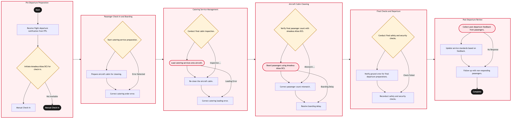

Updated 2026-08-21
Cabin Servicing and Catering Uplift
Process flow
Click to zoom

Process steps
▼
Phase 1 — Pre-Departure Preparation
3 steps
| Step | Activity | Role | System | Input | Output | KPI | Dec | Exc | Pain point |
|---|---|---|---|---|---|---|---|---|---|
| 1.1 | Receive flight departure notification from FPS. | YYZ Operations Control Duty Manager | Flight Planning System (FPS)U | Flight details and schedule | Confirmation of receipt | Notification received within 5 minutes | N | N | Delayed notifications can lead to missed preparation windows. |
| 1.2 | Initiate Amadeus Altea DCS for check-in. | Flight Attendant | Amadeus Altea DCSA | Passenger manifest and flight details | Check-in status | 95% of passengers checked in via Amadeus within 30 minutes | Y | N | System downtime forces manual check-in processes. |
| 1.3 | Manual Check-In | Flight Attendant | NoneU | Passenger manifest and flight details | Check-in status | 90% of passengers checked in manually within 45 minutes | N | N | Manual check-in is time-consuming and error-prone. |
▼
Phase 2 — Passenger Check-In and Boarding
3 steps
| Step | Activity | Role | System | Input | Output | KPI | Dec | Exc | Pain point |
|---|---|---|---|---|---|---|---|---|---|
| 2.1 | Start catering service preparation. | Catering Manager | Catering Management System (CMS)U | Flight details and passenger count | Catering order placed | 98% of catering orders accurate | Y | N | Incorrect catering orders can lead to passenger dissatisfaction. |
| 2.2 | Prepare aircraft cabin for cleaning. | Cabin Cleaning Supervisor | Cabin Cleaning Management System (CCMS)U | Flight details and previous flight data | Cleaning checklist completed | 100% of cabins cleaned before boarding | N | N | Inadequate cleaning can affect passenger comfort. |
| 2.3 | Correct catering order error. | Catering Manager | CMSU | Error details and corrected order | Corrected catering order placed | 95% of errors resolved within 10 minutes | N | N | Delayed corrections impact passenger boarding times. |
▼
Phase 3 — Catering Service Management
4 steps
| Step | Activity | Role | System | Input | Output | KPI | Dec | Exc | Pain point |
|---|---|---|---|---|---|---|---|---|---|
| 3.1 | Conduct final cabin inspection. | Cabin Cleaning Supervisor | CCMSU | Cleaning checklist and visual inspection | Inspection report | 95% of inspections pass on first attempt | Y | N | Failed inspections delay flight departure. |
| 3.2 | Load catering services onto aircraft. | Catering Staff | CMSU | Corrected catering order and flight details | Catering loaded | 98% of catering items loaded correctly | N | Y | Incorrect loading can cause delays or disruptions. |
| 3.3 | Re-clean the aircraft cabin. | Cabin Cleaning Supervisor | CCMSU | Inspection report and cleaning checklist | Cleaning completed | 100% of cabins re-cleaned before boarding | N | N | Re-cleaning is resource-intensive and time-consuming. |
| 3.4 | Correct catering loading error. | Catering Staff | CMSU | Loading details and corrected order | Corrected catering loaded | 95% of errors resolved within 10 minutes | N | N | Delayed corrections impact passenger boarding times. |
▼
Phase 4 — Aircraft Cabin Cleaning
4 steps
| Step | Activity | Role | System | Input | Output | KPI | Dec | Exc | Pain point |
|---|---|---|---|---|---|---|---|---|---|
| 4.1 | Verify final passenger count with Amadeus Altea DCS. | Flight Attendant | Amadeus Altea DCSA | Passenger manifest and flight details | Final passenger count | 95% of passenger counts verified accurately | Y | N | Incorrect counts can lead to boarding issues. |
| 4.2 | Board passengers using Amadeus Altea DCS. | Flight Attendant | Amadeus Altea DCSA | Final passenger count and boarding list | Passengers boarded | 95% of passengers boarded within 30 minutes | N | Y | Delays in boarding can cause operational disruptions. |
| 4.3 | Correct passenger count mismatch. | Flight Attendant | Amadeus Altea DCSA | Mismatch details and corrected manifest | Corrected passenger count | 95% of mismatches resolved within 10 minutes | N | N | Delayed corrections impact boarding times. |
| 4.4 | Resolve boarding delay. | Flight Attendant | Amadeus Altea DCSA | Delay details and resolution plan | Boarding completed | 95% of delays resolved within 10 minutes | N | N | Delays can cause passenger frustration. |
▼
Phase 5 — Final Checks and Departure
3 steps
| Step | Activity | Role | System | Input | Output | KPI | Dec | Exc | Pain point |
|---|---|---|---|---|---|---|---|---|---|
| 5.1 | Conduct final safety and security checks. | Security Officer | Security Checkpoint System (SCS)U | Flight details and security protocols | Checklist completed | 98% of checks passed on first attempt | Y | N | Failed checks can delay flight departure. |
| 5.2 | Notify ground crew for final departure preparations. | YYZ Operations Control Duty Manager | Flight Planning System (FPS)U | Flight details and preparation instructions | Notification sent | 100% of notifications sent within 5 minutes | N | N | Delayed notifications can cause operational disruptions. |
| 5.3 | Reconduct safety and security checks. | Security Officer | SCSU | Checklist and failed items | Checklist completed | 98% of checks passed on second attempt | N | N | Rechecks are time-consuming and resource-intensive. |
▼
Phase 6 — Post-Departure Review
3 steps
| Step | Activity | Role | System | Input | Output | KPI | Dec | Exc | Pain point |
|---|---|---|---|---|---|---|---|---|---|
| 6.1 | Collect post-departure feedback from passengers. | Aeroplan Member Services Agent | Customer Feedback System (CFS)U | Passenger feedback forms | Feedback summary | 95% of passengers provide feedback within 24 hours | N | Y | Low response rates can hinder continuous improvement. |
| 6.2 | Update service standards based on feedback. | Ground Operations Manager | Service Standards Management System (SSMS)U | Feedback summary and current standards | Updated standards | 90% of updates implemented within 1 month | N | N | Delayed updates can affect service quality. |
| 6.3 | Follow up with non-responding passengers. | Aeroplan Member Services Agent | CFSU | Passenger contact information | Feedback received | 20% of non-responders provide additional feedback | N | N | Follow-ups require additional resources and time. |
Swim lanes
YYZ Operations Control Duty Manager1.1 5.2
Flight Attendant1.2 1.3 4.1 4.2 4.3 4.4
Catering Manager2.1 2.3
Cabin Cleaning Supervisor2.2 3.1 3.3
Catering Staff3.2 3.4
Security Officer5.1 5.3
Aeroplan Member Services Agent6.1 6.3
Ground Operations Manager6.2
Systems touched
Flight Planning System (FPS)UAmadeus Altea DCSANoneUCatering Management System (CMS)UCabin Cleaning Management System (CCMS)UCMSUCCMSUSecurity Checkpoint System (SCS)USCSUCustomer Feedback System (CFS)UService Standards Management System (SSMS)UCFSU
Key performance indicators
- 95% of notifications received within 5 minutes
- 95% of passengers checked in via Amadeus within 30 minutes
- 98% of catering orders accurate
- 100% of cabins cleaned before boarding
- 95% of inspections pass on first attempt
Risks and control points
- Amadeus Altea DCS system downtime leading to manual check-in delays
- Incorrect catering orders causing passenger dissatisfaction
- Inadequate cleaning affecting passenger comfort
- Failed final safety and security checks delaying flight departure
- Low post-departure feedback response rates hindering continuous improvement
Air Canada Process Wiki — process and systems reference compiled from public sources
for IT Application Management and User Support pre-sales discovery.
Built 2026-08-21. Every system carries an evidence tier: tier C is an industry pattern and tier U is an open
question, and neither should be asserted as fact about Air Canada without confirmation in discovery.
Not affiliated with or endorsed by Air Canada. Air Canada, Aeroplan and Altitude are trademarks of Air Canada.